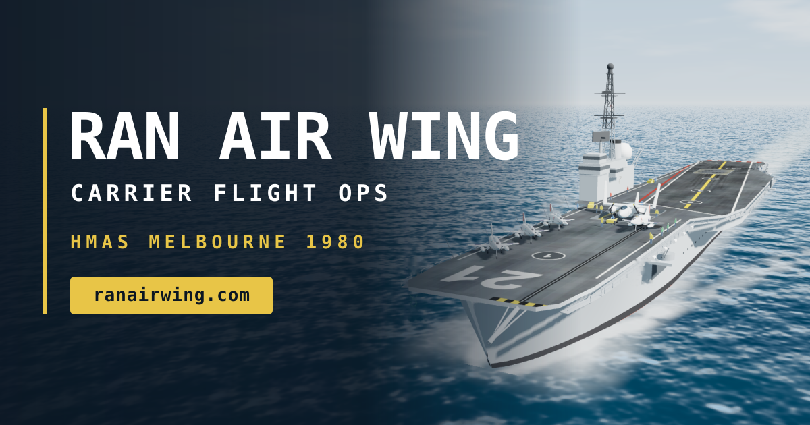

2026 — Present · Founder
Launch date: 11 Nov 2026
A browser-based flight simulator built around HMAS Melbourne (R21), the Royal Australian Navy aircraft carrier, as she operated around 1980 — a flyable A-4G Skyhawk, a task group at sea, and a deck to land back on.
